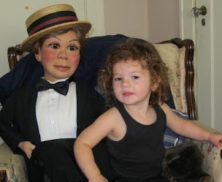

Like mother, like daughter
1/22/2011
{kind=link}

The ventriloquist logos featured on my 2011 collector coins have been longtime favorite images. They are the original work of ventriloquist David Miller. The silhouette renderings were first created in the '70s (I don't remember the exact year and didn't take time to look it up) as the official logos for the NAAV (North American Association of Ventriloquists) and the members of that organization.
So whenever I print or produce something that displays either or both of those images, I always send one to Dave for his personal collection. Thus, he was one of the first to receive one of the new $7.00 coins for 2011.
{kind=link}
This week I received a thank you note from Dave along with a brief update on his and Linda's retirement.
Dave says the highlight of their week is Friday when 2 1/2 year old granddaughter, Finlee, comes to visit. Finlee loves to go upstairs to Grandpa's office and talk to her little wooden pals (top photo), very much like her mother, Shannon, did when she was Finlee's age (bottom photo).
Thanks, Dave, for sharing the photos, and thanks for sharing your amazing artistic talent with the vent world for nearly 40 years!
PS: Are you taking family photos that include your vent puppets? It may not seem that important now, but the day will come when you'll be very glad you did.